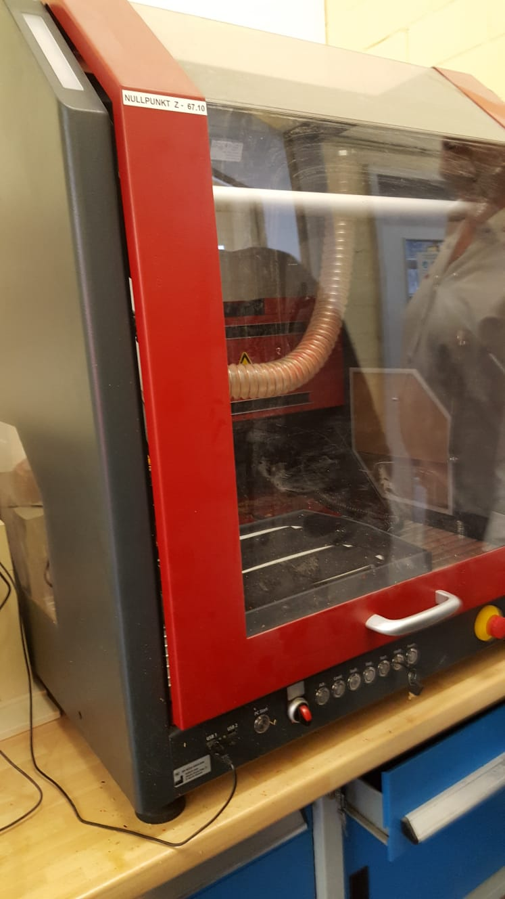
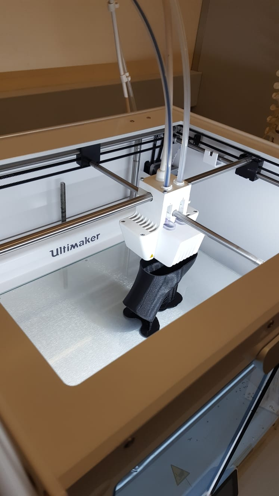
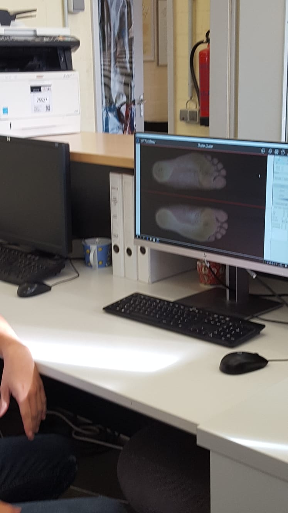
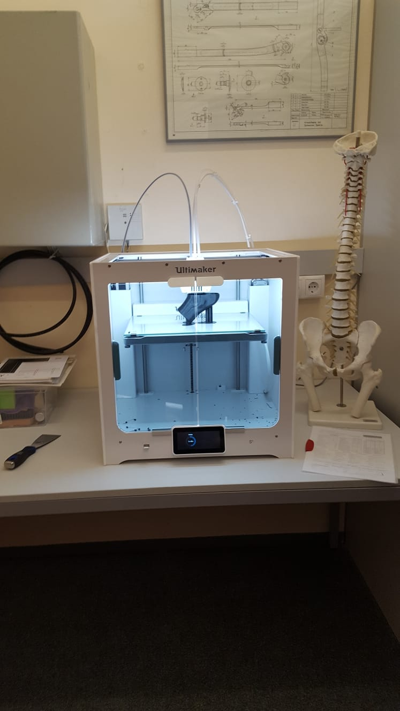
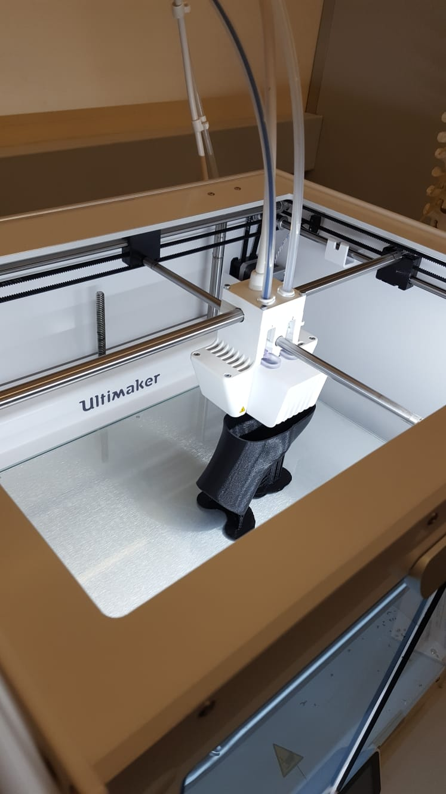
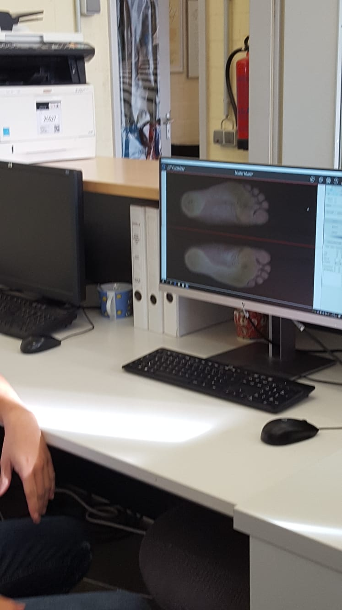
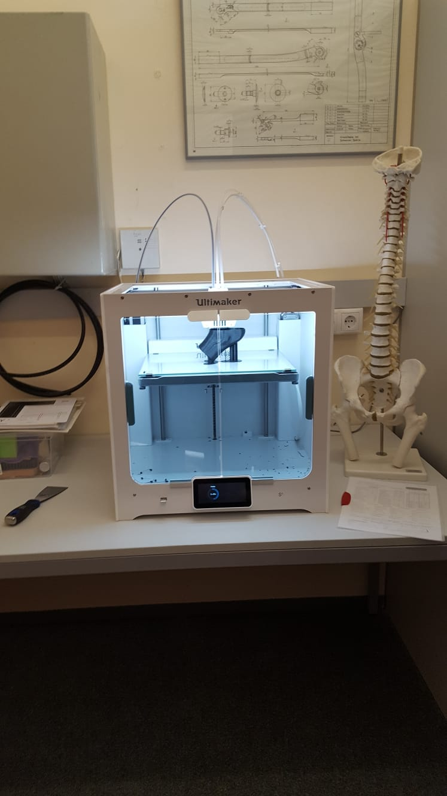

The company Hodey deals with people's physical disabilities by improving and facilitating their daily life. Hpdey is involved in certain areas like prevention, therapy, mobility and care. By focusing on orthopedic techniques as prothesis and orthoses or special orders, rehabilitation and medical techniques, homecare and sanitaries.In regard to customer wishes and satisfaction paying a lot of attention to the quality, prestige, perfect design, stability, handling and hygiene.
In order to produce some of these othoses or prothesis there are several steps involved. First of all the desired form of the certain body part is scanned by a special program called 'Quick and >Dirty'. This scan is then ready to be visualised and modeled.In case of larger sizes the scanned dimensions are made into a shaft which is used used as a model for further process steps. Only dimensions of 30x30 cm can be printed by a 3D printer,because by now bigger dimensions are not possible. Using this 3D print rigid form is poured in so that the model becomes resistant to hot temepartures.If the case is that a customer needs insoles the foot has to be scanned. The customer takes place at a chair and underneath is a scanner which scanns the downside of the foot.After scanning the program saves it and decisions about quality, look , form have to be made together with the customer. After consultations the order can be submitted and the producing part starts. The form of the foot is visible on a certain screen. The insole can be then modeled with the help of the program and can be produced in a machine which prints the insole out. A piece of material, which the customer chose according to it's preferences which was decided before, will be placed into the machines and it cutts out the desired form which is the endproduct
Hodey prodced also wheelchairs which are also made according to the above steps. Fisrt dimensions are taken and print of the body and then in accordance with these measures foamed so that for example the seat gets it perfect fit.
 




